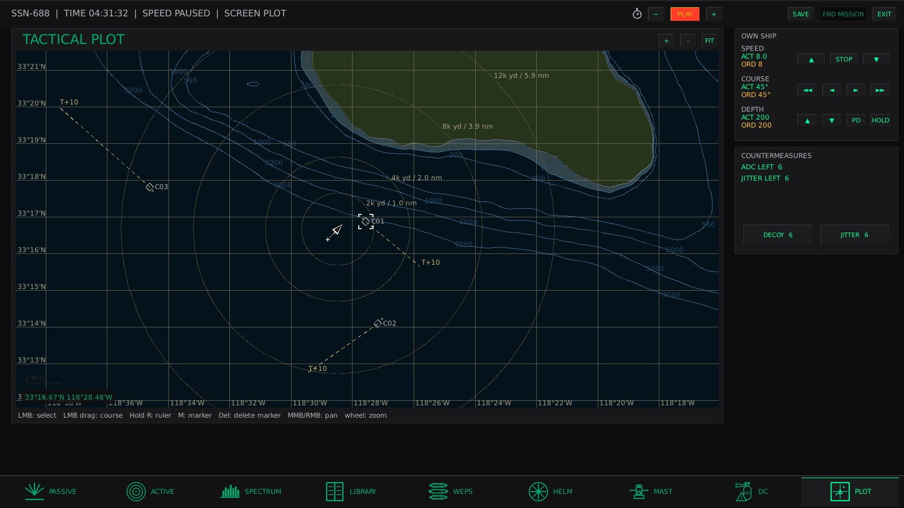
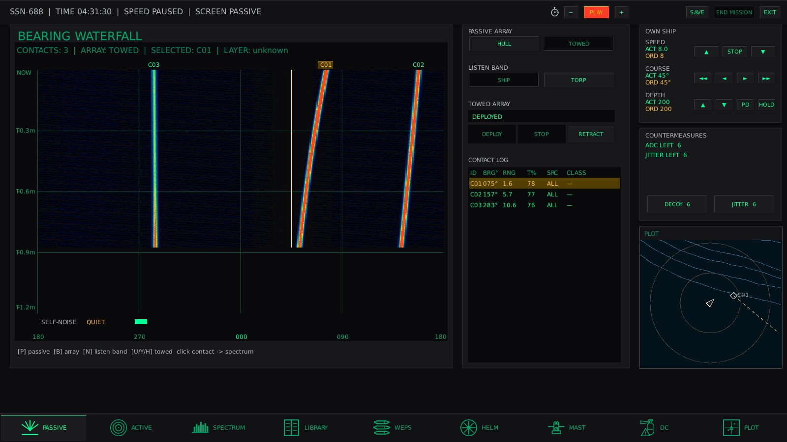

What you get
A Cold War–framed SSN sim focused on acoustics, classification, and weapon employment — not arcade torpedo spam.
- Hull and towed passive arrays, broadband / HF listen bands, active PPI
- SPECTRUM classification and TMA tracks on the plot
- Mk48 ADCAP, UGM-84 Harpoon, soft-kill countermeasures
- Masts: ESM, COMM, periscope; HELM and damage control
- Hostile ASW AI with DEFCON escalation

Platforms
Windows · macOS (Apple Silicon) · Linux · Android
Or open the full release page for checksums and notes.
Docs
Read the player manual before your first patrol — sonar workflow, COMM, weapons, and DEFCON.
